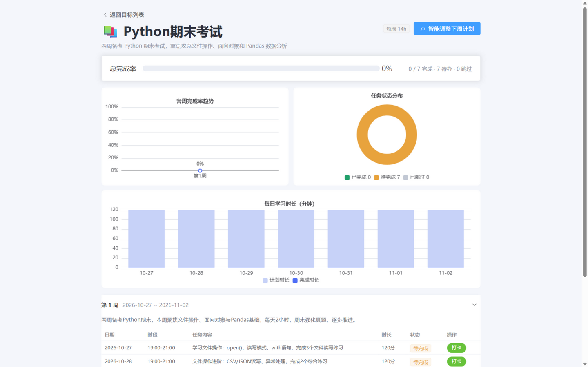
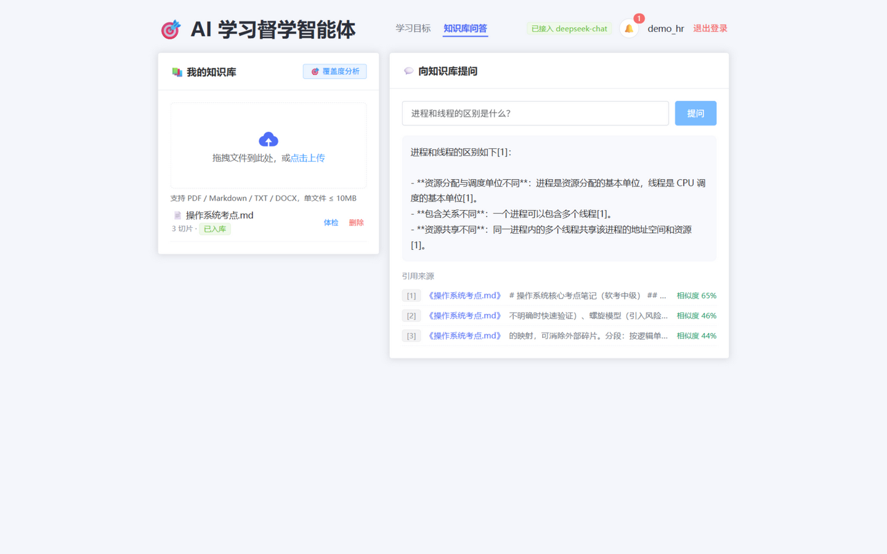
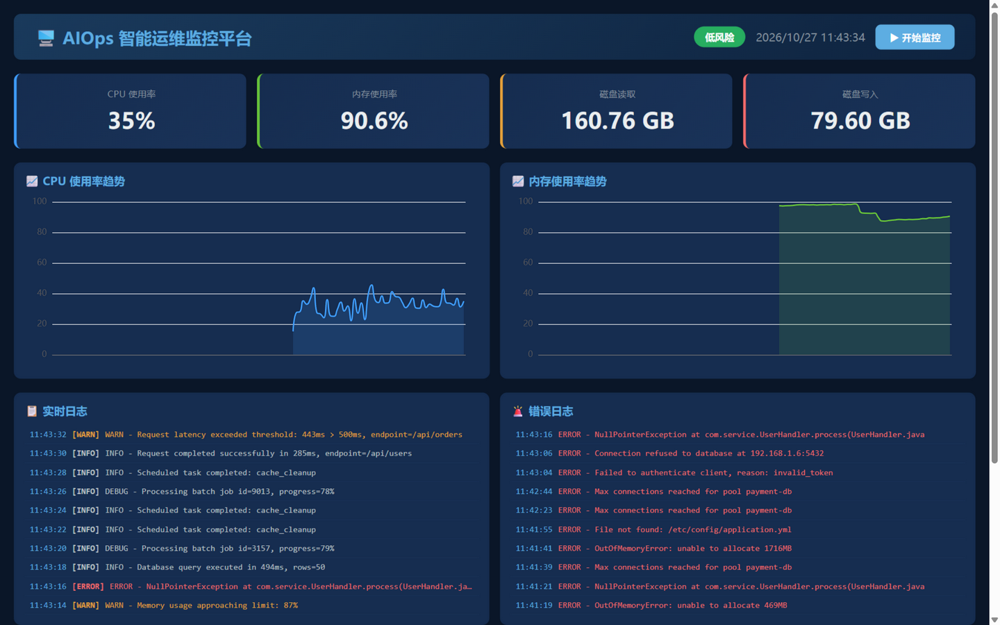

专业技能 Skills
Agent 开发
LangGraph 状态机工作流编排 · ReAct / Function Calling（项目中有脱离框架的自实现工具调用循环）· 提示词工程（结构化输出、解析加固、思维链控制实测调优）· 了解 LangChain / MCP 生态
RAG 全链路
文档解析与切片 · bge 嵌入 · Chroma 向量库 · 检索阈值 / 引用标注 / 拒答防幻觉 · 嵌入模型不可用自动降级 · 评测集构建与自动化指标
LLM 工程实践
OpenAI 兼容 API（DeepSeek / GLM / 通义）接入 · 成本观测埋点（token / 延迟 / 成本）· 本地推理模型 llama.cpp + Qwen 探针实测与调参
后端
Python · FastAPI · Pydantic v2 · SQLAlchemy · JWT + PBKDF2 认证 · pytest · MySQL / SQLite
前端与可视化
Vue3 + TypeScript + Element Plus + Pinia · ECharts（独立完成系统前端）· 了解 React（实习中参与性能优化）
数据与工程化
Kafka 生产 / 消费链路 · InfluxDB Flux 查询 · Elasticsearch 全文检索 · PostgreSQL · Docker 多阶段构建 · Git 分支 + PR + 评审协作 · 部署清单与回滚预案
毕业设计项目 Project
个性化学习计划生成与督学系统
独立开发 · 已开源：learning-planner-agent
一句话学习目标 → 智能体拆解生成 7 天结构化周计划 → 每日打卡反馈 → 按执行情况动态调整下周计划，形成「生成—执行—反馈—调整」闭环。
- LangGraph 状态机编排计划生成与动态调整两条工作流，生成链含校验失败自动重试；调整节点自实现 ReAct 工具调用循环（tool_calls 解析 → 执行 → 结果回填），不依赖框架黑盒。
- Function Calling 工具层：智能体自主调用目标 / 周统计 / 待办 / 反馈 4 类工具；Pydantic v2 校验时段格式、同日重叠、单日上限、截止合规，Schema 100% 拦截非法输出。
- RAG 知识库问答：bge 嵌入 + Chroma 向量库，回答带引用角标与相似度；检索阈值 + 拒答话术防幻觉，嵌入模型不可用自动降级。
- 工程化交付：LLM 调用观测埋点（token / 延迟 / 成本）、JWT + PBKDF2 认证、Docker 多阶段构建一键部署。
计划质量评测（30 目标 × 7 指标）
| 综合通过率 | 96.7%（29/30） |
| 结构合规（Schema） | 100%（30/30） |
| 修复长周期日期缺陷后 | 30/30 通过 |
| 生成延迟（修复后） | 6068ms → 3764ms |
RAG 问答评测（25 题）
| 文档内命中率（15 题） | 100% |
| 引用来源附带率 | 100% |
| 文档外拒答率（防幻觉，10 题） | 100% |
| 问答延迟 | avg 610ms |


项目经历 Project
智能故障预测与自愈平台
全栈 · 多模态深度学习
面向企业 IT 运维场景：实时采集服务器指标与日志，多模态模型融合预测故障风险，LLM 驱动自愈决策。
- 多模态融合预测模型：Transformer 时序编码器处理 30 点 CPU / 内存指标序列，BiLSTM 编码日志文本，跨模态注意力与因果门控动态融合；自建测试集 F1 0.98。
- 数据与实验管线：指标 / 日志模拟数据生成、数据增强与困难样本生成脚本，模型对比与压测脚本一键复跑、结果落盘可查。
- 实时推理链路：InfluxDB Flux 查询近 5 分钟指标 + Elasticsearch 检索错误日志，在线输出低 / 中 / 高三档风险等级。
- LLM 自愈决策：通义千问按实时指标与错误日志生成根因分析与修复脚本并自动执行，支持人工否决，全程 PostgreSQL 审计留痕。
- Docker Compose 六服务编排 Kafka / ZooKeeper / InfluxDB / Elasticsearch / PostgreSQL / Kafka-UI 六个基础服务。
模型对比实验（自建测试集，F1）
| 纯指标基线 | 0.69 |
| 纯日志 | 0.97 |
| 简单拼接融合 | 0.84 |
| 去掉因果门控（消融） | 0.94 |
| 多模态因果门控融合（本系统） | 0.98 |

实习经历 Internship
气象局人工智能气象应用研究中心
Trit-AI 气象智能体平台 · 开发实习生
参与中心自研气象智能体平台 Trit-AI（FastAPI + React + 多 LLM 判断链 + 技能 / 部门知识库体系）研发，负责部门知识库与对话链路模块。
- 判断层 LLM 链加固：直连本地 Qwen 模型探针实测，定位思维链挤占 token、解析「回声陷阱」等 4 类根因并逐一修复，意图路由准确率 0/6 → 6/6、延迟 1.6~2.6s → 1.1s，36 项回归锁死退化。
- 部门知识库自助接入：修复检索 5 条根因链（工具绕行 / 打分虚高 / 路由错派 / 命名错位等），金牌问句思考耗时 70.7s → 5.0s；实现「一表单自助接入 + Webhook 秒级同步 + 每日兜底 + 失败飞书告警」全生命周期（PR #23 / #28）。
- 安全与健壮性加固：按两轮评审将接入凭据改为环境变量注入、登记文件原子写 + 线程锁；实现五步下线流程与 ensure_fresh 新鲜度保障，消除「改动后仍答旧内容」的 1 小时陈旧窗口（PR #32 / #34）。
- 会话体验修复：历史会话整屏空白拆出 3 个独立根因逐一击破；前端 O(N²) 回灌改批量灌入 + React.memo，后端同步 I/O 迁移 asyncio.to_thread（PR #33）。
- 独立复核：两轮真实 SSE 实测推翻「延迟优化默认已生效」结论，输出 6 项遗留清单；交付全程 Gitea 分支 + PR + 评审，配部署清单与回滚预案。